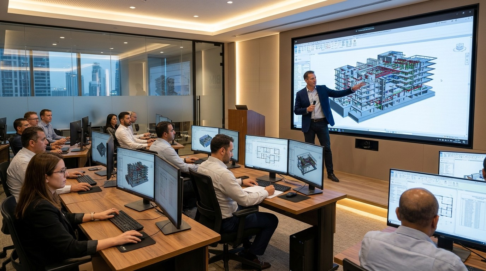

Fundamentos
Fundamentos BIM
Conceptos esenciales, terminología (LOD/LOI), roles de equipo y flujo de trabajo colaborativo para iniciar la adopción BIM en proyectos.
Programas prácticos y actualizados, para profesionales y equipos de proyecto que buscan aplicar BIM con criterio, metodología y enfoque en la ejecución.

Los ejercicios se basan en proyectos de arquitectura e ingeniería con interferencias y restricciones verídicas.
Enseñamos bajo principios ISO 19650, estructuración de CDE y protocolos de intercambio openBIM.
Priorizamos el desarrollo directo sobre software de modelado, detección de colisiones y simulación de fases.
Planes formativos adaptados al flujo y necesidades específicas de empresas contratistas o consultoras.
Conceptos esenciales, terminología (LOD/LOI), roles de equipo y flujo de trabajo colaborativo para iniciar la adopción BIM en proyectos.

Desarrollo de modelos paramétricos de arquitectura, estructuras e instalaciones técnicas con rigor geométrico y tablas de metrados.

Federación de especialidades, detección automatizada de colisiones espaciales, matrices de interferencias y sesiones de resolución ICE.

Vinculación de modelos con cronogramas Gantt para simulación de secuencias constructivas, frentes de obra y análisis de plazos.
Organización, estandarización de carpetas, codificación de documentos, protocolos BEP y gobernanza de datos bajo norma ISO 19650.

Uso práctico del modelo en campo, lectura de información desde tablets, verificación de pases y actualización de incidencias As-Built.
Aplicación directa en workflows y situaciones reales de proyecto desde la primera sesión de trabajo.
Del modelado inicial a la coordinación técnica, la planificación temporal y el control efectivo en obra.
Diseñado para arquitectos, ingenieros civiles, sanitarios, mecánicos, coordinadores y residentes de obra.